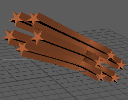

- 若要访问“扫描网格”(Sweep Mesh)选项，请在选择曲线网格后，单击“属性编辑器”(Attribute Editor)中的“sweepMeshCreator”选项卡
从一条简单的对角线创建的默认多边形、矩形、直线、圆弧、波和自定义扫描
使用“扫描网格”(Sweep Mesh)，可以从简单的曲线形状生成多边形网格。
下面介绍了“从曲线扫描网格”(Sweep Mesh from Curve)工具的设置。有关如何使用“扫描网格”(Sweep Mesh)的说明，请参见使用“扫描网格”(Sweep Mesh)从曲线创建网格。
扫描剖面

“扫描剖面”(Sweep Profiles)部分可用于设置曲线扫描形状。每种“扫描剖面”(Sweep Profiles)类型都有特定于相应剖面类型的设置。此部分的末尾列出了所有剖面类型公用的扫描剖面属性。
多边形扫描剖面
以下设置特定于多边形扫描剖面。有关“分布”(Distribution)、“对齐”(Alignment)、“变换”(Transformation)、“插值”(Interpolation)、“法线”(Normals)和“UV”设置，请参见这些部分后面的公用扫描属性。
- 类型
- 从“圆形”(Circle)或“星形”(Star)中进行选择。
- 内径(Inner Radius)
- （仅适用于“星形”(Star)类型。）
- 星形剖面的内部大小。
- 边数(Sides)
- 凸面或星形剖面形状的细分数
- 封口(Cap)
- 启用以填充扫描网格开始和结束处的孔。
矩形扫描剖面
以下设置特定于矩形扫描剖面。有关“分布”(Distribution)、“对齐”(Alignment)、“变换”(Transformation)、“插值”(Interpolation)、“法线”(Normals)和“UV”设置，请参见这些部分后面的公用扫描属性。
- 宽度(Width)/高度(Height)
- 矩形剖面的宽度或高度。
- 角半径(Corner Radius)
- 矩形剖面角点处的倒角半径。
- 角分段(Corner Segments)
- 矩形剖面角点处的分段数。
- 角深度(Corner Depth)
- 角的圆度（值为 0 时以 45º 展平，值为负时向内圆化）。
- 封口(Cap)
- 启用此选项以填充扫描网格开始和结束处的孔
直线扫描剖面
直线扫描剖面没有特定设置。有关“分布”(Distribution)、“对齐”(Alignment)、“变换”(Transformation)、“插值”(Interpolation)、“法线”(Normals)和“UV”设置，请参见这些部分后面的公用扫描属性。
圆弧扫描剖面
以下设置特定于圆弧扫描剖面。有关“分布”(Distribution)、“对齐”(Alignment)、“变换”(Transformation)、“插值”(Interpolation)、“法线”(Normals)和“UV”设置，请参见这些部分后面的公用扫描属性。
- 角度
- 圆弧的角度，介于 0º 和 360º 之间。
- 分段(Segments)
- 定义圆弧形状细分数。
波浪(Wave)
以下设置特定于波扫描剖面。有关“分布”(Distribution)、“对齐”(Alignment)、“变换”(Transformations)、“插值”(Interpolation)、“法线”(Normals)和“UV”设置，请参见这些部分后面的公用扫描属性。
- 振幅(Amplitude)
- 波高度。
- 循环(Cycles)
- 波数。
- 偏移(Offset)
- 沿剖面宽度移动波图案。
- 分段(Segments)
- 沿波宽度的细分数。
自定义(Custom)

以下设置可用于自定义扫描剖面。有关如何使用这些设置的信息，请参见使用“扫描曲线”(Sweep Curve)创建自定义网格。
有关“分布”(Distribution)、“对齐”(Alignment)、“变换”(Transformation)、“插值”(Interpolation)、“法线”(Normals)和“UV”设置，请参见这些部分后面的公用扫描属性。
注： 在您使用“自定义扫描剖面”(Custom Sweep Profile)形状时，会创建一个名为 sweepProfileConverter 的辅助节点。
- 封口(Cap)
- 启用以填充扫描网格开始和结束处的孔。
- 自定义(Custom)
- 单击“自定义扫描剖面”(Custom Sweep Profile)时，将显示一个对话框，供您选择所需的自定义网格显示方式。
“自定义扫描剖面”(Custom Sweep Profile)对话框
- 类型
- 选择“曲线对象”(Curve Object)、“多边形对象”(Poly Object)、“多边形面”(Poly Face)或“多边形边”(Poly Edge)。
- 剖面(Profile)
- 选择自定义剖面在视口或大纲视图中的形状。
公用扫描属性
这些设置可用于每种扫描剖面类型。
分布(Distribution)
激活“启用”(Enable)选项可显示用于扩散扫描剖面图案的控件。
- 分布(Distribution)
- 设置为“圆形”(Circle)、“方形”(Square)或“线”(Line)以控制图案的重复方式。
- 实例数(Number of Instances)
- 定义剖面的重复次数。
- 缩放实例(Scale Instances)
- 定义图案中每个元素的大小（这是“缩放剖面”(Scale Profile)设置的倍增）。
- 旋转实例(Rotate Instances)
- 定义围绕路径的重复元素的方向。
- 覆盖(Coverage)
-

- 定义围绕路径的重复元素的间距（值为 1 表示完全覆盖）。
对齐(Alignment)
激活“启用”(Enable)选项可显示用于网格相对于路径的位置的控件
- 水平(Horizontal)
- 设置为“左”(Left)、“中心”(Center)或“右”(Right)，以沿水平方向对齐剖面（相对于路径）。
- 垂直(Vertical)
- 设置为“顶”(Top)、“中心”(Center)或“底”(Bottom)，以沿垂直方向对齐剖面（相对于路径）。
- 水平偏移(Horizontal Offset)
- 调整剖面相对于水平对齐选项的间距。
- 垂直偏移(Vertical Offset)
- 调整剖面相对于垂直对齐选项的间距。
变换(Transformations)
控制扫描网格相对于路径的缩放、旋转：
- 缩放剖面
- 定义剖面相对于路径的宽度。
- 如果在“设置”(Settings)部分中禁用“剖面均匀缩放”(Profile Uniform Scale)（下文介绍），则可以为剖面的 X 轴或 Y 轴设置特定宽度。
- 旋转剖面(Rotate Profile)
- 定义剖面相对于路径的方向。
- 扭曲(Twist)
-

- 定义剖面围绕路径长度旋转的次数（值 1 表示完整的 360º 旋转）。
- 锥化(Taper)
- 相对于起始缩放剖面值，增加或减少剖面沿路径的缩放（值为 0 表示将缩小到路径终点处的点）。
- 锥化曲线
- 在“锥化曲线”(Taper Curve)渐变 UI 中添加控制点，以沿扫描路径的长度创建可变锥化。属性“缩放剖面”(Scale Profile)的倍增。
插值(Interpolation)
通过控制沿路径长度的细分数来设置生成的网格的密度。
- 模式(Mode)
-
在“精度”(Precision)、“起点到终点”(Start to End)、“EP 到 EP”(EP to EP)和“距离”(Distance)之间切换模式。
- 用于确定沿路径的细分数的方法。
- 距离(Distance)
- 设置相对于路径的世界空间长度的细分（可以在多个扫描网格上设置此项以保持一致、均匀的分段，无论曲线拓扑或长度为何）
- 精度(Precision)
- 算法使用 0 到 100 的范围来确定细节量（100 是最大设置，使用此设置得到的密度最高）
- 起点到终点(Start to End)
- 设置沿路径全长的确切细分数
- EP 到 EP(EP to EP)
- 设置路径的每个跨度内的确切细分数（在曲线的每个编辑点之间设置细分）
法线(Normals)
控制生成的扫描网格的面法线和边平滑。
- 反向(Reverse)
- 反转面法线的方向。
- 平滑处理(Smoothing)
- 基于面角度软化/硬化边。
UV
自动为生成的扫描网格创建 UV。
- 无(None)
- 禁止自动创建 UV（在复杂或密集扫描网格上进行迭代时，可以使用此项来暂时提高性能）。
- 统一
- 创建均匀 UV，而不考虑纹理扭曲
- 展开
- 创建按比例分布以与扫描网格的拓扑高度匹配的 UV（最小纹理扭曲）。
高级设置(Advanced Settings)
其他缩放和方向选项：
- 流
- 设置剖面跟随路径的方式：
-
- “自然”(Natural)：由路径流确定的固有扭曲和侧滚。
- “无侧滚”(No Roll)：强制剖面相对于路径保持一致的方向
- 均匀剖面缩放(Uniform Profile Scale)
- 禁用此项可允许缩放剖面单独使用唯一的 X 和 Y 属性。
- 均匀实例缩放(Uniform Instance Scale)
- 禁用此项可允许图案缩放元素单独使用唯一的 X 和 Y 属性。
- 相对实例方向(Relative Instance Orientation)
- 对图案元素禁用自动方向算法（默认情况下处于启用状态）。